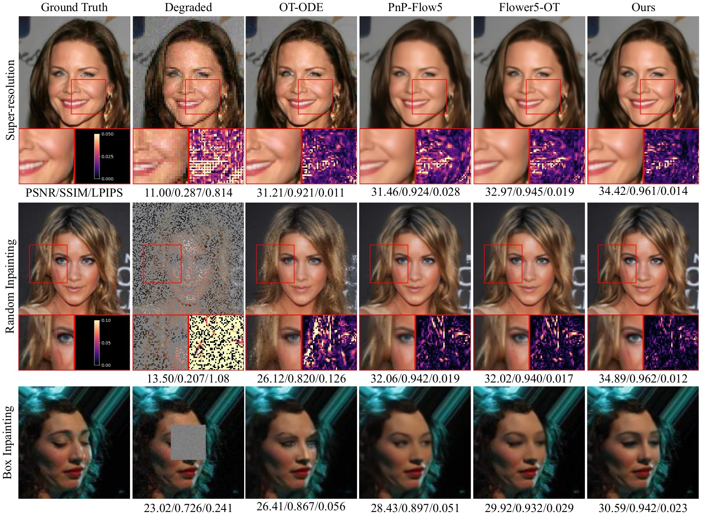
Flow matching methods for imaging inverse problems typically incorporate measurements through network conditioning or guidance during sampling. Neither approach explicitly applies the forward operator within the learned conditional velocity field. We develop a principled measurement-conditional velocity parameterization that does. For a linear interpolation path, we express the optimal velocity through the posterior mean $\mathbb{E}[x_1 \mid x_t, y]$ and show that this mean is the unique minimizer of a variational objective with an explicit data-consistency term. The velocity defined by this minimizer provably transports the source distribution to the measurement-conditioned posterior. This result leads to a forward operator-aware velocity field that is trained end-to-end and requires no separate guidance during sampling. Across five imaging tasks, our method achieves leading reconstruction quality with up to 50× fewer network evaluations than competitive flow-based methods. Varying the number of sampling steps also controls the distortion–perception trade-off without retraining.
Under linear interpolation $x_t = t x_1 + (1-t) x_0$, the state $x_t$ and the measurement $y = Ax_1 + \eta$ are two conditionally independent noisy observations of the same clean image $x_1$. Stacking them gives an augmented observation model whose MMSE estimator is exactly the measurement-conditioned posterior mean, and that mean determines the optimal conditional velocity:
Our main theoretical result (Proposition 1) shows that for a non-degenerate $p_1$ with bounded support, $\sigma > 0$ and $t \in (0,1)$, there is a regularizer $\phi_t$—unique up to an additive constant—for which the posterior mean is the unique global minimizer and unique stationary point of
The first quadratic enforces interpolation consistency, the second enforces measurement consistency explicitly, and $\phi_t$ absorbs whatever structure remains. We further prove that this velocity satisfies the conditional continuity equation $\partial_t p_t(x \mid y) + \nabla \cdot \big(p_t(x \mid y) v(x,t,y)\big) = 0$, so the induced flow transports the Gaussian source to $p_\tau(\cdot \mid y)$, which converges weakly to the measurement-conditioned posterior $p(x_1 \mid y)$ as $\tau \to 1^-$. Data consistency becomes part of the generative dynamics rather than an external sampling correction.
$\phi_t$ is not available in closed form, so we split the objective with half-quadratic splitting and alternate the two resulting updates. The $x$-update is a closed-form data-consistency solve that depends on $A$ and $y$; the $z$-update combines interpolation consistency with the implicit regularizer and is replaced by a learned estimator $R_\theta$, damped toward the data-consistent iterate. After $K$ iterations the output $z_\theta^K(x_t, t, y)$ estimates the posterior mean and defines the learned velocity.
The whole estimator is trained end-to-end with a weighted flow-matching loss, using a stabilized time scale $\tau_t = \max(1 - t, \tau_{\min})$ that keeps the velocity bounded near $t = 1$:
The result is an operator-aware velocity field: every inner iteration of every velocity evaluation applies $A$ and $A^{\top}$ through the data-consistency solve, so data consistency is learned as part of the dynamics rather than imposed afterwards. Sampling therefore needs no guidance term, no projection, and no proximal correction at inference—just $N$ explicit Euler steps.
require: A, σ, [tmin, tmax], τmin
repeat
x₁ ~ p₁, x₀ ~ N(0,I), t ~ U[tmin, tmax]
η ~ N(0, σ²I), y ← A x₁ + η
xₜ ← t x₁ + (1−t) x₀, τₜ = max(1−t, τmin)
zK ← PostMean(xₜ, t, y, A)
vθ ← (zK − xₜ) / τₜ
vtarget ← (x₁ − xₜ) / τₜ
update θ with the weighted FM loss
until convergence
require: y, A, trained model, step count N
x₀ ~ N(0, I)
Δt ← 1 / N
for i = 0 … N−1 do
tᵢ ← i Δt
zKi ← PostMean(xᵢ, tᵢ, y, A)
vᵢ ← (zKi − xᵢ) / (1 − tᵢ)
xᵢ⁺¹ ← xᵢ + Δt · vᵢ
return xN
no guidance, no projection, no proximal step
require: xₜ, t < 1, y, A, Rθ, K, ρ, β
z⁰ ← xₜ
for k = 0 … K−1 do
xᵏ⁺¹ ← (AᵀA + ρI)⁻¹ (Aᵀy + ρ zᵏ)
ẑᵏ⁺¹ ← Rθ(xᵏ⁺¹, xₜ, t)
zᵏ⁺¹ ← (1−β) xᵏ⁺¹ + β ẑᵏ⁺¹
return zK
θ enters only through Rθ; each call costs
K solves + K network evaluations
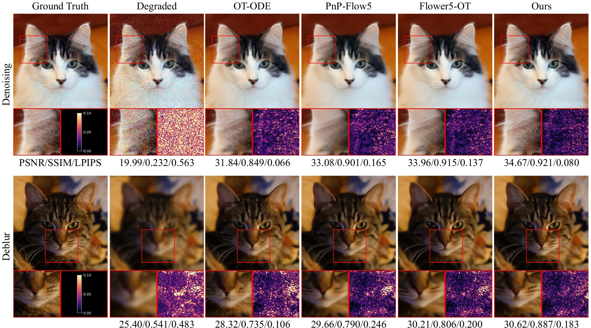
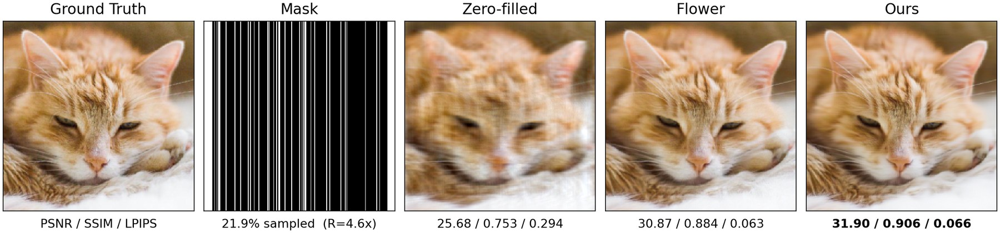
Inference cost is $O(NK)$: $N$ ODE steps, each calling the posterior-mean estimator with $K = 5$ inner iterations. The default $N\!=\!2$ configuration therefore uses 10 network evaluations. Per-NFE cost is comparable to PnP-Flow and Flower, but FIRM needs 50× fewer of them—reconstructing an image in 0.24 s against 13.03 s for Flower5-OT. Peak memory is higher than PnP-Flow and Flower because intermediate iterates are retained, but far below the remaining baselines. The speedup stems from learning data consistency during training rather than enforcing it at inference.
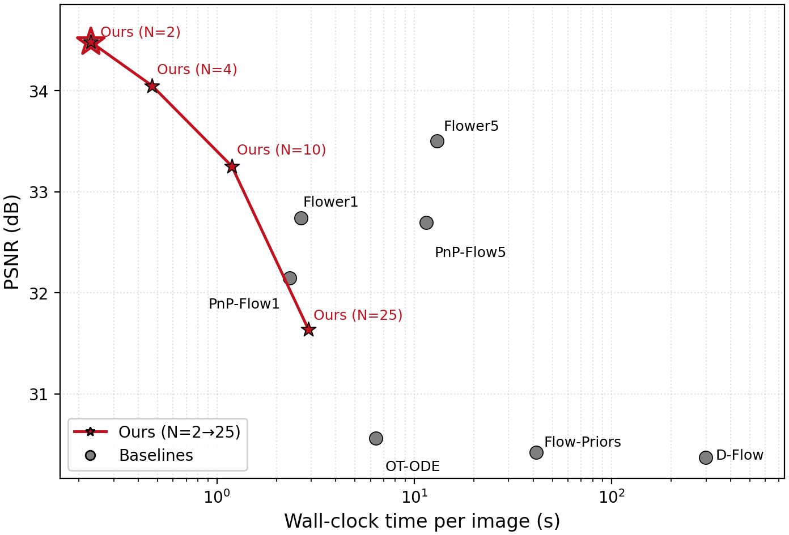
| Metric | OT-ODE | D-Flow | Flow Priors | PnP-Flow1 | PnP-Flow5 | Flower1 | Flower5 | Ours (N=2) | Ours (N=4) | Ours (N=10) | Ours (N=25) |
|---|---|---|---|---|---|---|---|---|---|---|---|
| Time (s) ↓ | 6.37 | 299.25 | 41.27 | 2.33 | 11.46 | 2.67 | 13.03 | 0.24 | 0.50 | 1.21 | 3.13 |
| Peak memory (MB) ↓ | 743 | 6,124 | 2,728 | 192 | 192 | 193 | 193 | 331 | 331 | 331 | 331 |
| NFEs ↓ | 180 | – | 100 | 100 | 500 | 100 | 500 | 10 | 20 | 50 | 125 |
Averaged over 10 images on a single NVIDIA RTX A6000. Best and second best are highlighted.
The number of Euler steps $N$ is a free knob at inference. Coarse integration lands near the measurement-conditioned posterior mean, favouring PSNR and SSIM; finer integration moves toward perceptually realistic samples, favouring LPIPS. A single trained model therefore spans both regimes—no retraining, no reweighting of the loss.
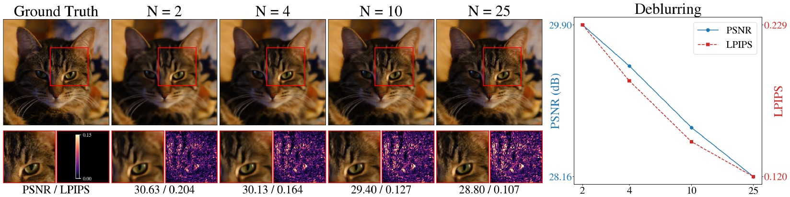
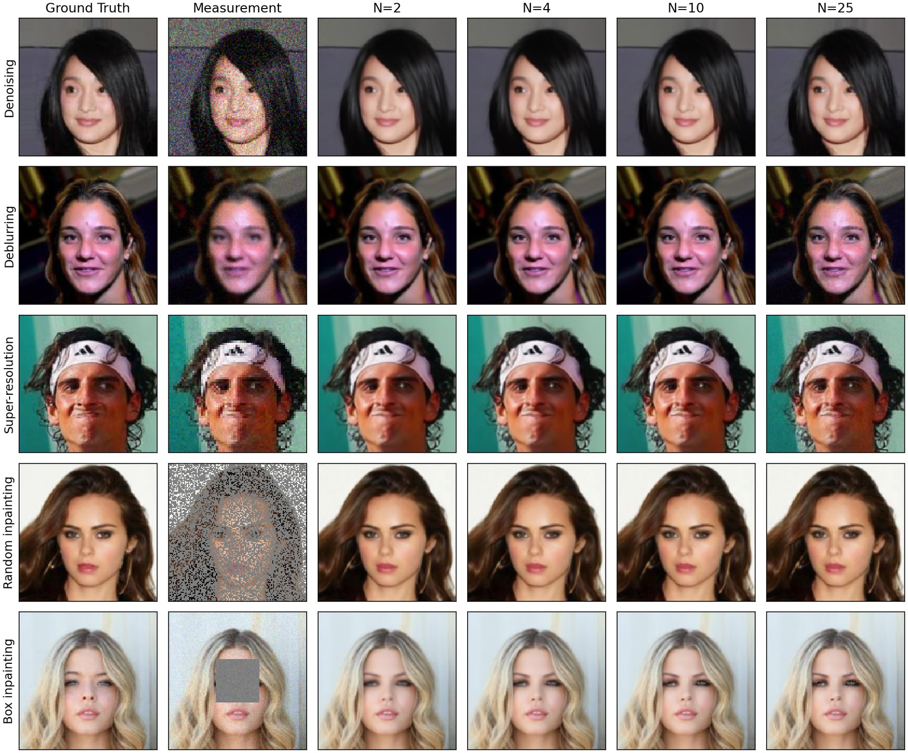
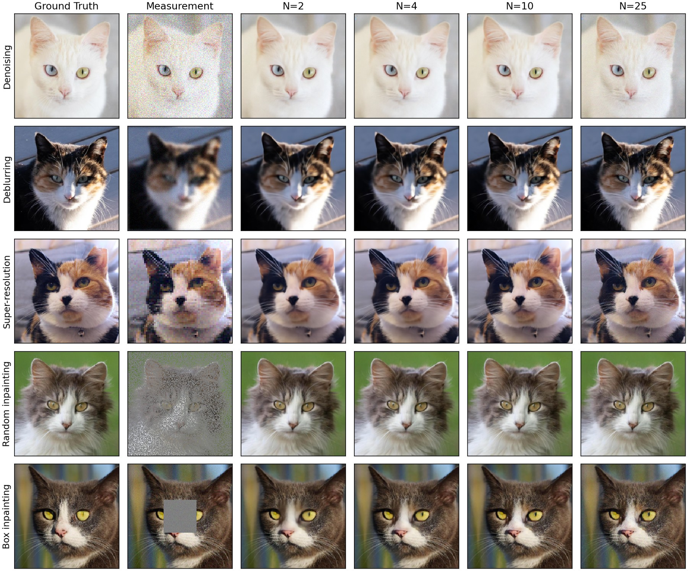
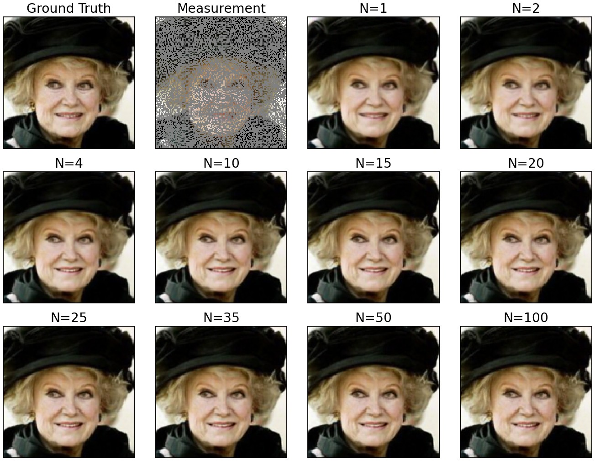
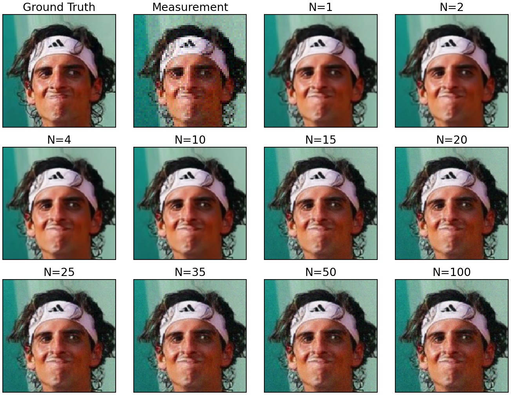
Five restoration tasks, two datasets, 100 test images each. Degradations follow the protocols of PnP-Flow and Flower without modification: denoising at $\sigma = 0.2$; deblurring with a $61 \times 61$ Gaussian kernel; $\times 2$ (CelebA) and $\times 4$ (AFHQ-Cat) super-resolution; random inpainting masking 70% of pixels; and box inpainting with a centered $40\times40$ (CelebA) or $80\times80$ (AFHQ-Cat) mask. All baselines except ISTA-Net and I²SB enforce measurement consistency at inference time using a pretrained prior.
| Denoising | Deblurring | Super-resolution | Random inpainting | Box inpainting | |||||||||||
|---|---|---|---|---|---|---|---|---|---|---|---|---|---|---|---|
| Method | PSNR↑ | SSIM↑ | LPIPS↓ | PSNR↑ | SSIM↑ | LPIPS↓ | PSNR↑ | SSIM↑ | LPIPS↓ | PSNR↑ | SSIM↑ | LPIPS↓ | PSNR↑ | SSIM↑ | LPIPS↓ |
| Degraded | 20.00 | 0.348 | 0.371 | 27.81 | 0.740 | 0.125 | 10.25 | 0.183 | 0.827 | 11.95 | 0.196 | 1.041 | 22.26 | 0.743 | 0.213 |
| PnP-GS | 32.54 | 0.908 | 0.035 | 33.97 | 0.924 | 0.041 | 31.23 | 0.890 | 0.065 | 29.20 | 0.875 | 0.069 | – | – | – |
| PnP-HQS | 32.17 | 0.897 | 0.044 | 34.87 | 0.946 | 0.033 | 32.33 | 0.911 | 0.075 | 32.81 | 0.945 | 0.023 | – | – | – |
| ISTA-Net | – | – | – | 35.38 | 0.950 | 0.035 | 33.54 | 0.937 | 0.038 | 34.70 | 0.960 | 0.022 | – | – | – |
| DiffPIR | 31.12 | 0.883 | 0.060 | 32.68 | 0.910 | 0.060 | 31.46 | 0.893 | 0.034 | 31.69 | 0.916 | 0.025 | – | – | – |
| I²SB | – | – | – | 33.25 | 0.924 | 0.012 | 31.92 | 0.891 | 0.014 | 32.80 | 0.938 | 0.011 | 28.72 | 0.803 | 0.042 |
| OT-ODE | 30.49 | 0.858 | 0.032 | 32.96 | 0.920 | 0.029 | 31.34 | 0.903 | 0.027 | 28.65 | 0.870 | 0.051 | 29.37 | 0.919 | 0.038 |
| D-Flow | 26.01 | 0.606 | 0.092 | 31.21 | 0.854 | 0.037 | 30.44 | 0.843 | 0.026 | 33.61 | 0.942 | 0.015 | 30.59 | 0.898 | 0.027 |
| Flow-Priors | 29.31 | 0.767 | 0.135 | 31.51 | 0.857 | 0.056 | 28.36 | 0.715 | 0.100 | 32.87 | 0.943 | 0.019 | 30.06 | 0.859 | 0.048 |
| PnP-Flow1 | 31.75 | 0.904 | 0.044 | 34.48 | 0.936 | 0.039 | 31.04 | 0.901 | 0.045 | 33.02 | 0.944 | 0.018 | 30.45 | 0.933 | 0.037 |
| PnP-Flow5 | 32.24 | 0.910 | 0.056 | 34.80 | 0.941 | 0.046 | 31.44 | 0.905 | 0.056 | 33.95 | 0.953 | 0.022 | 31.06 | 0.939 | 0.043 |
| Flower1-OT | 32.22 | 0.913 | 0.033 | 34.95 | 0.947 | 0.025 | 32.30 | 0.922 | 0.034 | 33.05 | 0.944 | 0.017 | 31.17 | 0.945 | 0.022 |
| Flower5-OT | 33.07 | 0.925 | 0.038 | 35.65 | 0.954 | 0.031 | 33.03 | 0.931 | 0.039 | 33.92 | 0.953 | 0.020 | 31.85 | 0.952 | 0.023 |
| Ours (N=2) | 33.67 | 0.932 | 0.034 | 36.04 | 0.957 | 0.029 | 34.39 | 0.949 | 0.028 | 35.03 | 0.963 | 0.018 | 33.25 | 0.960 | 0.022 |
| Ours (N=4) | 33.24 | 0.928 | 0.034 | 35.78 | 0.956 | 0.028 | 33.96 | 0.946 | 0.026 | 34.67 | 0.962 | 0.016 | 32.57 | 0.958 | 0.021 |
| Ours (N=10) | 32.26 | 0.914 | 0.032 | 35.03 | 0.950 | 0.023 | 33.13 | 0.937 | 0.022 | 33.98 | 0.956 | 0.014 | 31.85 | 0.953 | 0.020 |
| Ours (N=25) | 31.56 | 0.901 | 0.028 | 31.46 | 0.848 | 0.026 | 30.39 | 0.837 | 0.029 | 33.42 | 0.951 | 0.013 | 31.33 | 0.947 | 0.020 |
100 CelebA test images. Best and second best among all methods (the degraded reference is excluded). – marks a setting where a baseline does not apply. Scroll the table sideways on narrow screens.
| Denoising | Deblurring | Super-resolution | Random inpainting | Box inpainting | |||||||||||
|---|---|---|---|---|---|---|---|---|---|---|---|---|---|---|---|
| Method | PSNR↑ | SSIM↑ | LPIPS↓ | PSNR↑ | SSIM↑ | LPIPS↓ | PSNR↑ | SSIM↑ | LPIPS↓ | PSNR↑ | SSIM↑ | LPIPS↓ | PSNR↑ | SSIM↑ | LPIPS↓ |
| Degraded | 20.00 | 0.293 | 0.529 | 24.38 | 0.529 | 0.436 | 11.59 | 0.212 | 0.867 | 13.23 | 0.213 | 1.082 | 21.52 | 0.727 | 0.215 |
| PnP-GS | 33.00 | 0.895 | 0.078 | 28.39 | 0.787 | 0.387 | 24.44 | 0.639 | 0.411 | 29.82 | 0.844 | 0.143 | – | – | – |
| PnP-HQS | 32.69 | 0.896 | 0.108 | 29.34 | 0.793 | 0.362 | 26.58 | 0.724 | 0.441 | 33.07 | 0.916 | 0.051 | – | – | – |
| ISTA-Net | – | – | – | 29.36 | 0.790 | 0.342 | 28.22 | 0.784 | 0.297 | 34.10 | 0.929 | 0.049 | – | – | – |
| DiffPIR | 31.05 | 0.839 | 0.186 | 28.24 | 0.747 | 0.319 | 24.24 | 0.650 | 0.385 | 32.31 | 0.886 | 0.057 | – | – | – |
| I²SB | – | – | – | 27.72 | 0.725 | 0.077 | 27.19 | 0.739 | 0.070 | 31.79 | 0.879 | 0.026 | 27.32 | 0.763 | 0.072 |
| OT-ODE | 30.48 | 0.818 | 0.081 | 27.82 | 0.735 | 0.126 | 26.71 | 0.737 | 0.108 | 29.99 | 0.849 | 0.087 | 24.47 | 0.873 | 0.095 |
| D-Flow | 26.44 | 0.573 | 0.180 | 28.60 | 0.746 | 0.167 | 25.20 | 0.616 | 0.188 | 32.79 | 0.898 | 0.044 | 27.02 | 0.840 | 0.081 |
| Flow-Priors | 29.67 | 0.756 | 0.165 | 27.28 | 0.726 | 0.188 | 23.95 | 0.566 | 0.274 | 32.95 | 0.909 | 0.051 | 26.13 | 0.809 | 0.130 |
| PnP-Flow1 | 31.62 | 0.866 | 0.139 | 28.71 | 0.779 | 0.285 | 27.56 | 0.780 | 0.158 | 33.71 | 0.923 | 0.038 | 26.45 | 0.895 | 0.111 |
| PnP-Flow5 | 31.87 | 0.868 | 0.170 | 29.01 | 0.785 | 0.312 | 28.01 | 0.791 | 0.167 | 34.44 | 0.932 | 0.045 | 27.14 | 0.900 | 0.127 |
| Flower1-OT | 32.12 | 0.881 | 0.113 | 29.38 | 0.793 | 0.237 | 26.76 | 0.759 | 0.262 | 33.68 | 0.922 | 0.042 | 26.67 | 0.914 | 0.065 |
| Flower5-OT | 32.75 | 0.892 | 0.126 | 29.73 | 0.801 | 0.264 | 27.09 | 0.767 | 0.272 | 34.36 | 0.931 | 0.048 | 27.32 | 0.922 | 0.067 |
| Ours (N=2) | 33.31 | 0.904 | 0.081 | 29.89 | 0.809 | 0.229 | 29.10 | 0.816 | 0.167 | 34.71 | 0.936 | 0.043 | 29.27 | 0.924 | 0.060 |
| Ours (N=4) | 32.93 | 0.898 | 0.079 | 29.42 | 0.796 | 0.188 | 28.50 | 0.801 | 0.141 | 34.30 | 0.932 | 0.039 | 28.65 | 0.921 | 0.052 |
| Ours (N=10) | 31.96 | 0.879 | 0.072 | 28.72 | 0.775 | 0.145 | 27.75 | 0.777 | 0.115 | 33.53 | 0.922 | 0.033 | 27.94 | 0.916 | 0.047 |
| Ours (N=25) | 29.69 | 0.776 | 0.081 | 28.16 | 0.754 | 0.119 | 26.54 | 0.676 | 0.121 | 32.91 | 0.912 | 0.030 | 26.76 | 0.819 | 0.077 |
100 AFHQ-Cat test images. Best and second best among all methods (the degraded reference is excluded).
$K$ controls how many data-consistency / prior alternations happen inside one velocity evaluation. PSNR keeps improving with $K$ while LPIPS bottoms out at $K = 5$. Since cost scales as $O(NK)$, we use $K = 5$ throughout—roughly 70% of the cost of $K = 7$ for essentially the same quality.
| K | PSNR ↑ | SSIM ↑ | LPIPS ↓ | Time (ms) ↓ |
|---|---|---|---|---|
| 3 | 34.63 | 0.959 | 0.020 | 137 |
| 5 | 35.03 | 0.963 | 0.018 | 223 |
| 7 | 35.21 | 0.964 | 0.019 | 322 |
Random inpainting, $N = 2$.
Training with a fixed forward model ties the learned field to a particular $A$ and $\sigma$. A model trained at $\sigma = 0.01$ and evaluated at other noise levels still outperforms the operator-agnostic Flower5-OT on all three metrics, at both tested levels.
| Method | σtest=0.005 · PSNR ↑ | SSIM ↑ | LPIPS ↓ | σtest=0.02 · PSNR ↑ | SSIM ↑ | LPIPS ↓ |
|---|---|---|---|---|---|---|
| Flower5-OT | 34.02 | 0.954 | 0.019 | 33.65 | 0.947 | 0.024 |
| Ours | 35.19 | 0.965 | 0.018 | 34.57 | 0.954 | 0.020 |
A model trained at a 0.7 inpainting mask ratio, applied without retraining to ratios from 0.5 to 0.8. Quality is monotone in the test ratio with no failure mode at either extreme. Because we do not train a matched model per ratio, this measures graceful degradation rather than quantifying the mismatch penalty. At test time the data-consistency step uses the actual test mask, while the learned regularizer and the step-size parameters stay fixed at their $p = 0.7$ values.
| Test mask ratio p | PSNR ↑ | SSIM ↑ | LPIPS ↓ |
|---|---|---|---|
| 0.5 | 38.26 | 0.978 | 0.008 |
| 0.6 | 36.95 | 0.973 | 0.012 |
| 0.7 † (training ratio) | 35.03 | 0.963 | 0.018 |
| 0.8 | 32.10 | 0.936 | 0.034 |
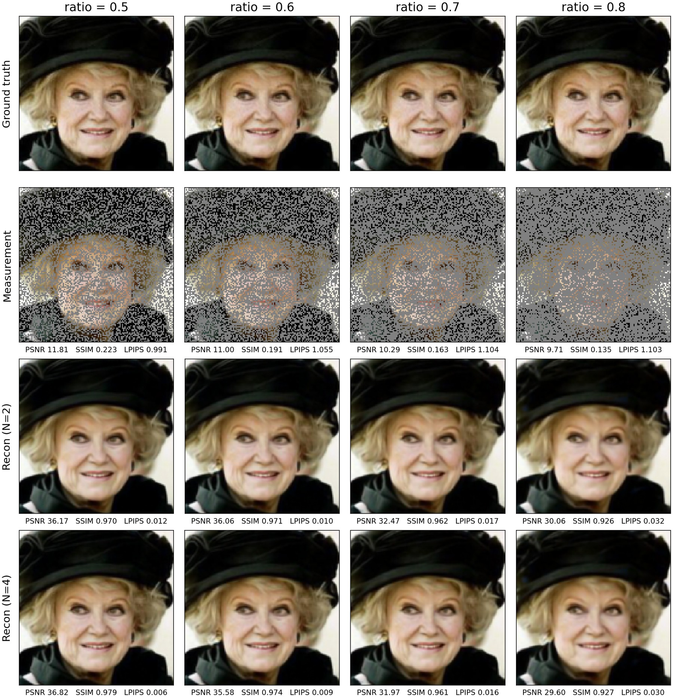
Proposition 1 says the ideal field transports the source to $p(x_1 \mid y)$, not to a single point estimate. Two experiments check that the trained model inherits this behaviour.
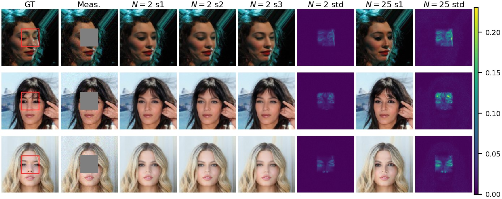
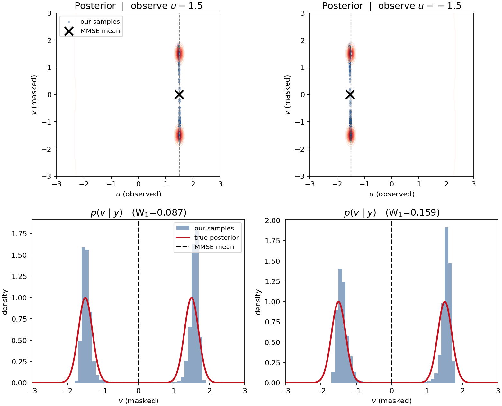
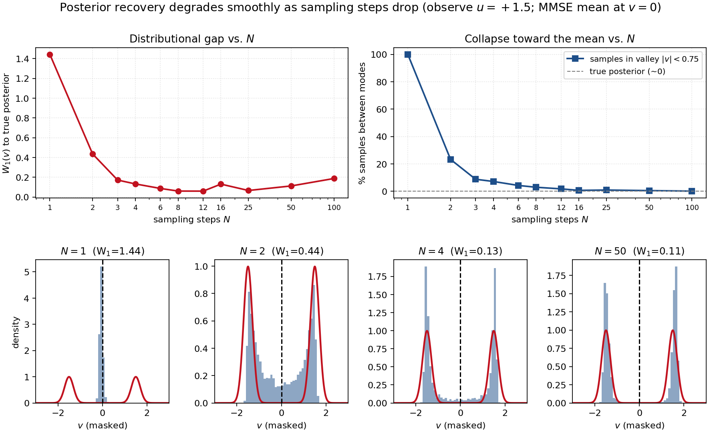
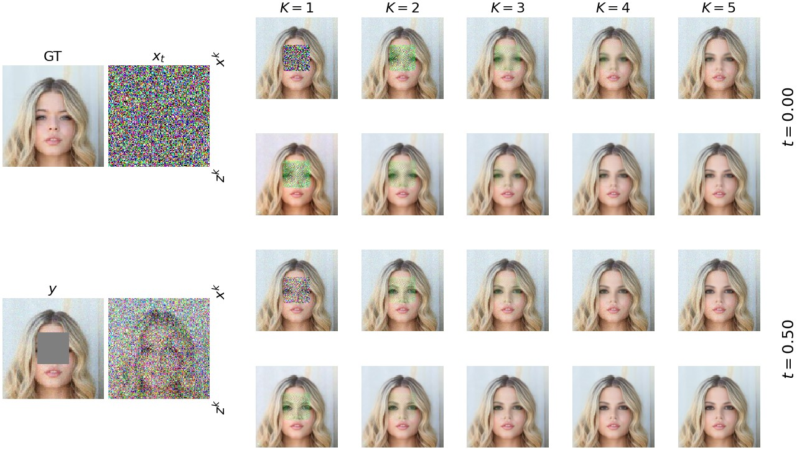
This work was supported in part by the National Science Foundation under CAREER award CCF-2625643 and award CCF-2622128.
@misc{shoushtari2026firm,
title = {FIRM: Flow-based Imaging via Regularized Minimization},
author = {Shoushtari, Shirin and Chandler, Edward P. and Shi, Xiao
and Kamilov, Ulugbek S.},
year = {2026},
journal = {arXiv 2609.12953}
}